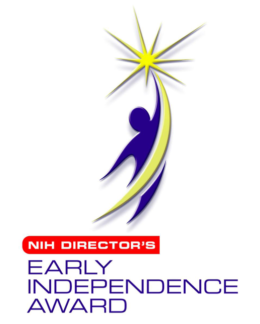

Research
High-dimensional studies have defined the diversity and specializations of immune cells that populate solid tumors, are complicit in tumor progression, and contribute to resistance to therapy. T cells engineered to express chimeric antigen receptors (CAR) manifest novel and surprising immunology in the context of the immune tumor microenvironment (TME). We use cutting edge tools to understand how we can target the tumor microenvironment to advance CAR T cell therapy for solid tumors.
- Identify how the expression of chimeric receptors alters the immunobiology of T cells within the immune TME
- Understand how radiotherapy can be applied to alter the tumor immune landscape and improve CAR T cell therapy
- Develop novel cell therapies that capitalize on the immunology of CAR T cells in the TME
Institute Description: The Ahmed Khan lab is part of the highly collaborative and interdisciplinary Precision Immunology Institute and the Tisch Cancer Institute at the Icahn School of Medicine at Mount Sinai in Manhattan. We are recruiting energetic and motivated researchers at all levels to join our team. Interested applicants should send a CV and references to: jalal.ahmed{at}mountsinai.org
Mount Sinai is an Equal Opportunity Employer committed to diversity and inclusion in all aspects of recruiting and employment. All qualified individuals are encouraged to apply and will receive consideration without regard to race, color, gender identity or expression, sexual orientation, national origin, age, religion, creed, disability, veteran status or any other factor which cannot lawfully be used as a basis for an employment decision.
Funding Sources

- 